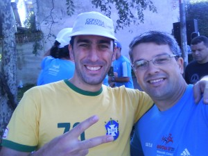
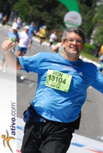

vamo, vamo, vamo…
Que dia maravilhoso!
A corrida foi melhor do que poderia esperar. Superou até as expectativas que eu tinha antes mesmo do ataque de ansiedade que me fez ganhar 5 quilos.
Quando eu vi havia terminado a corrida em 03h16m41s eu fiquei muito emocionado. Liguei para a esposa e a voz saiu embargada, lábios frouxos e em forma de bico, como os de crianças prestes a ficar em prantos. A noite, então, nem se fala. Eu não tinha idéia de que tinha demorado tanto para chegar no tapete da largada. Meu tempo líquido foi demais de bom. Estou até agora meio bobo, satisfeito e orgulhoso.
Mal dá para acreditar que fiz os 25km em 03h02m31s.
Sobre a corrida. Eu estava super nerovoso, desde a hora que acordei. Por mais que tivessem me dito o contrário, eu temia que os quilos a mais fizessem com que eu me machucasse, quebrasse nos primeiros kms, etc…
Para a minha sorte no ponto de ônibus eu vi uma corredora, que sempre vejo passar na avenida, mas nunca tinhamos conversado. A Luíza, que ia para a sua segunda Maratona de São Paulo. Não fosse ela eu teria tido um colapso de nervoso, por causa do ônibus que se atrasou.
Fomos juntos (de ônibus e trem) até a largada onde acabamos nos perdendo, mas eu já fui pronto para correr e a Luíza ainda tinha de se preparar e guardar os pertences dela. Adorei a Luíza, quem sabe eu ainda a acompanhe nos treinos longos dela no Toronto.
Assim que me perdi dela, uma supresa. Encontrei um conterrâneo. Nossas mães são vizinhas. Ambos não acreditávamos naquele encontro. Um registro disso e a confirmação do convite. Venha fazer parte do blog e das corridas Petelo. Será muito bem-vindo.
Quase na hora da largada e vejo o Fabão, foi um prazer poder abraçá-lo depois de tantos comentários trocados. O Fabão tentando manter a concentração e eu lá, falando mais do que matraca na semana santa.
Eu o Fabão caminhamos até bem próximo ao tapete nos cumprimentamos e cada um partiu no seu ritmo.
Segui como dava e, contrário do que supunha, só fiquei mais tranquilo quando os corredores dos 10km seguiram no caminho deles. Sei lá, fez bem ao psicológico saber que eramos muitos, os quartas-feiras.
Achei muito bacana a festa que tinha na Praça Panamericana, as sombras das arvores são bem-vindas. Ainda mais para mim que nunca fiz um treino curto sequer que se iniciasse antes das 09:00. Foi menos dificil correr no sol que eu esperava. No fundo, achava que morreria, só pode.
Toda oriental que passava eu olhava para o pés, na esperança de reconhecer a Maymi através dos seus tênis invocado.
Também próximo a Praça Panamericana puder ver Thiago e Paulo, gritei para que eles acelerassem porque eu ia no encalço deles. Mais um cumprimento do Fabão que aquela altura devia estar uns dois km na minha frente fui na batida. No Villa Lobos o número de corredores aumentam. Muitos visitantes do parque correm o trecho que segue do Portão principal até a entrada do esctacionamento do lado. A partir do 18km mantive-me firme para não perder a passada. No km 21,1 eu subi ainda pomposo a viaduto da Cidade Universitária. Mas na avenida da raia olímpica, como esperado, eu me arrastava. Um trotezinho para lá de safado. No posto de Gatorade parei, peguei dos copos e caminhei pelo tempo necessário para saboreá-los. Dali em diante até pensei na estratégia de eleger corredores para ultrapassar. Mas não rolava. No máximo emparelhei. Queria acelerar mas nas pernas já pesavam. Terminei sem sprint, mas muito feliz. Orgulhosíssimo.
Ah, também teve a caminhada de 3km. É que o ônibus que tomei em direção ao Ibipuera quebrou.
Foi um enorme prazer cumprimentar o amigo Fábio Namiuti, bem como os demais 100 Juízo que graças ao próprio Fábio, são famosos e conhecidos, como o Zebra e o Fábio Matheus. Também foi um prazer conhecer o Guilherme Maio. Do seu mal eu também padeço e vamos superar isso. Parabéns pelo esforço.
Não sei o que aprontei que não encontro mais a foto que a Janete (esposa do Fábio Namiuti) tirou de nós. Aguardo as do Alecão, então.
Não podíamos mais esperar (o Alecão e eu), e acabei não vendo o Fabão, Thiago e Paulo. O tempo deles foi ótimo, espero que a satisfação também.
A noite eu liguei para o Thiago e deu caixa-postal. Uma pena não termos nos visto.

Mundo pequeno: Encontrei um conterrâneo: Petelo.
Nossas mães são vizinhas em Regente Feijó.

Grande Fabão

Antes de o sol me abater eu ainda estava assim: todo faceiro.

Da esquerda para direita: O Capitão Zebra, a zebra do dia e o Fábio Namiuti
CLASSIFICAÇÃO NUM ATLETA IDADE FX.ET. EQUIPE TEMPO TEMPO LÍQUIDO
1894 º 13038 ROBERTO YUITI MAKI 52 M5054 03:14:08 03:02:20 NIPPON
1895 º 11736 EDUARDO CONSTÂNCIO 44 M4044 03:05:56 03:02:21 molusco DUDA
1.896 º 13104 CLAUDIO LUCIO DUNDES 36 M3539 EX-sedentário 03:16:41 03:02:31
1897 º 11863 DANIEL MARMUGI FARACHE CORRER DA SILVA BORA 33 M3034 03:07:42 03:02:39
1898 º 6250 VITOR RODRIGUES DE OLIVEIRA 58 M5559 03:06:16 INDIVIDUAL 03:02:40
.jpg "DSC01705 (1024x576)")
.jpg "DSC01739 (1024x576)")
.jpg "DSC01765 (1024x576)")
.jpg "DSC01832 (1024x576)")
.jpg "DSC01929 (1024x576)")


{kind=link}
{kind=link}
{kind=link}
Eu vi você lá, estava muito bem e correndo bonito.
Parabéns Claudião fez uma ótima prova.
Claudio tinha acabado a bateria do meu celular e eu estava na casa da Paula e sem carregador.
Aeee Claudião. Parabéns, todo o teu empenho e esforço valeram a pena. Estava na torcida aqui em Curitiba e no mesmo horário que vcs estavam correndo, nós, os Canaletas, estávamos fazendo um longão.
Bjos e boa semana,
Dani
Claudião, posso dizer que te vi inteirão. E muito feliz.
Parabéns de novo primão.
Claudio,
Parabéns por sua prova.
Agradeço pela referência.
O prazer foi meu em conhecê-lo.
Obrigado !
Ass.: Guilherme.
Fala Claudio!
Prazer conhece-lo! E parabens pela corrida, nao tava facil ontem nao. Se tiver a foto ae, depois me manda.
Obrigado e espero te ver em breve por aqui no Vale.
Abraço
Sensacional, Claudião! Bela prova, resultado melhor ainda, mostrando que garra e força de vontade transpõem MESMO obstáculos que colocam (ou colocamos) no caminho. Parabéns pra você, mais uma vez! Fique mesmo orgulhoso, mas já vá pensando aí nos próximos motivos para se orgulhar.
Foi um grande prazer te encontrar por lá e fazer parte da sua festa. Que possamos celebrar muitas outras vezes, todos juntos, por aí, por aqui ou em qualquer outro lugar.
Um grande abraço e até as próximas!
Fábio
Thiago,
Parabéns. O Paulo escreveu que foi emocionante a chegada de vocês. A segunda de muitas mesmo. Obrigado pela amizade e vamos que na frente tem vários desafios para cumprirmos.
Dani,
Obrigado pela amizade e lembrança constante. É gostoso ser lembrado e também lembrar. No domingo, quando passei pela placa do km 5 e quis pensar que faltavam 20, lembrei do Thiago, do Fábio Namiuti, do Fabão, que estavam na minha frente. Deu um gás. E disse para mim memso: faltam apenas 20.
Um grande abraço em você e no Vinícius.
Guilherme,
Eu sempre li o que escreveu no fórum runnerbrasil e sei que você é um grande corredor, não desista jamais!!!!
Fábio Matheus,
Grande figura! Parabéns pela estréia na maratona. Grandes treinos 100 Juízo e nos veremos nas corridas, sim. Obrigado pela visita e comentário.
Fábio Namiuti,
Perguntaram para mim se venci os quenianos. Respondi que em felicidade sim, disparado, sem chance sequer de ver minha rabeira. Obrigado pelo carinho, incentivo de sempre e, principalmente por me fazer acreditar que poderia ir em frente nesta empreitada. Tenho muito de me orgulhar, de mim mesmo e das pessoas que me cercam.
Ah, vc editou o post original…
Já peguei a foto, valeu.
Cara, sensacional te conhecer pessoalmente e compartilhar os 14min até o tapete de largada.
Vc é um vencedor, Claudião! Parabéns!
Nos vemos por aí.
ua
Claudio, demorei a te achar, To juntando nossa turma do colegial, queria muito te por no grupo do Ivo Liboni, entre em contato comigo pelo whatsap 11- 99349-4394
feliz aqui de te ver bem
um abraço,